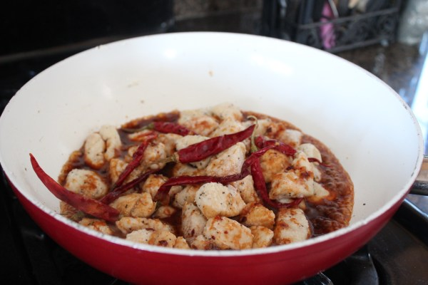

MY COOKING


- 3 tbsp canola oil (divided)
- ¼ cup Gluten-Free Soy Sauce
- 2 tbsp rice vinegar
- 1 tbsp sriracha
- 2 tbsp honey
- 1 tbsp fresh garlic (crushed)
- 2 tsp fresh ginger (grated)
- ½ tsp chinese five spice
- 1 tsp crushed red pepper flakes
- 1 lb boneless skinless chicken breasts
(sliced into large chunks)
- ½ cup cornstarch
- ½ tsp salt
- ½ tsp black pepper
- 8 small dried red chilies
- ¼ cup scallions (sliced)
(sliced into large chunks)

chinese five spice and red pepper flakes. Set aside.


When the oil is hot, add the chicken and cook 4-5 minutes.
Add the chilies, then pour the sauce over the chicken and cook 2-3 minutes.